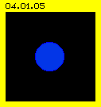
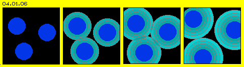
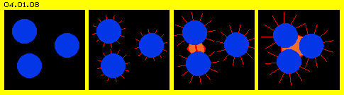
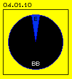
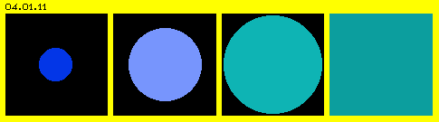
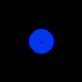
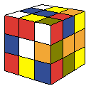

| Alfred Evert | 22.06.2006 |
04.01. Thema
Gott und die Welt, Alles oder Nichts
Die Reaktionen auf meine Veröffentlichungen haben aufgezeigt, wo ich mich nicht eindeutig genug ausgedrückt hatte oder welche Gedanken-Schritte offensichtlich für Leser nicht nachvollziehbar sind. Ich habe erkennen müssen wie schwierig es schon ist, sich rein verbal auf die Bedeutung von Begriffen einigen zu können. Ich bemühe mich darum, nur simple mechanische Bewegungen zu beschreiben - aber praktisch alle Kritiker argumentieren stets mit abstrakten, von der simplen Realität abgehobenen Begriffen, z.B. anstelle von realer Bewegung mit abstrakten ´Kräften´ oder noch abstrakter und damit nichts-sagend mit ´Energie´.

Diese blaue Fläche könnte z.B. das ganze Etwas symbolisieren, also das was man Universum nennt. Einige Kritiker mahnen mich, dass ich dann auch Gott als Erschaffer des Universums benennen müsse - obwohl ich diese Frage deutlich ausgeklammert habe, weil sie unseren derzeitigen Horizont einfach übersteigt. Ich klammere diese Frage nach dem ´Schöpfer´ oder ´Erschaffer´ aus, allein weil Menschen ständig arbeiten bzw. ´schaffen´ (was bei uns Schwaben gleichgesetzt ist) - damit aber nicht ausgeschlossen ist, dass es Alternativen dazu geben könnte. Im Übrigen kann keine Wissenschaft feststellen, warum irgend etwas letztlich existiert. Man kann fiktiv zurück rechnen - aufgrund fragwürdiger Parameter - wann dieses Universum aus einem Urknall heraus entstanden sein könnte - warum aber wer oder was den Urknall ausgelöst hat und alle Fragen des Zuvors bleiben absolut unbeantwortet.
Andere Kritiker werfen mir vor, dass ich Gott ´ver-materialisiert´ hätte, indem alles aus diesem einen Äther bestehen solle. Auch das habe ich klar ausgesprochen: Äther ist das Medium aller Erscheinungen und nur dieses. Alles was wir an Physikalisch-Materiellem kennen sind (relativ grobe) Äther-Bewegungen und ich gehe davon aus, dass auch alles Mental-Geistige absolut real in diesem Medium manifest ist (durch feinere Bewegungsmuster). Es könnte gut sein, dass sich Gott dieses Mediums bedient - das Medium mag damit formgebend für andere Erscheinungen sein - aber es bleibt Medium und nichts mehr (also keinesfalls Gott).

Das Problem der Grenze zwischen Etwas und Nichts (bzw. dessen was außerhalb von Etwas sein müsste) stellt sich aber keinesfalls nur an der Außengrenze des Universums, sondern unzählige Male innerhalb des Alls und unserer Welt. Nach geltender Lehre ist nicht nur das All leer, sondern gibt es ´Vakuum´ zwischen allen Teilen. Egal ob Sonnensystem oder Atom, immer unterstellt man einen materiellen Kern (plus Planeten oder Elektronen oder Ähnliches) - und dazwischen Nichts. Irgendwelche Teil sind hier in Bild 04.01.06 und der Animation wieder durch Blau repräsentiert, dazwischen das schwarze Nichts.
Sobald man in abgegrenzten Teilchen denkt, ergeben sich zwangsläufig Zwischenräume - aus denen nach geltender Lehre noch immer der Äther eliminiert ist. Ersatzweise wird ´Vakuum´ eingesetzt und diese relative Leere ist erfüllt durch ´Felder´ - was wiederum nur eine abstrakte Worthülse ist. Kritiker werden einwenden, dass Felder selbstverständlich real sind, exakt berechenbare Kräfte repräsentieren. Aber warum und wie die Kräfte aller Felder wirken sollen - das bleibt total offen.
Im Prinzip gibt es nur zweierlei Kräfte; abstoßende und anziehende Kräfte. Einigermaßen einsichtig ist die Wirkung des Abstoßens (wie im Bild skizziert ist). Teilchen könnten eine gewisse ´Strahlung´ aussenden, deren Druck auf andere Teilchen wirkt und damit die Distanz zwischen den Teilchen vergrößert wird. Wenn Teilchen auf ihrem Weg mit anderen kollidieren, ließe sich so auch elastischer Stoss erklären.
Durch solche ´Strahlung´ käme also eine mechanische Wirkung zwischen materiellen Teilchen zustande - wie aber soll ´Druck´ vermittelt werden, wenn nicht auf ebenso ´materiell-mechanische´ Weise? Oder ganz prinzipiell wird doch allgemeines Verständnis sein, dass jegliche Strahlung eine Bewegung darstellt - Bewegung impliziert ein bewegtes Etwas. Das Vakuum ist gewiss zu leer, enthält zu wenig bewegbares Etwas. Das ´Feld´ als solches ist nur eine abstrakte Rechengröße und damit nichts, was ´an sich´ diese realen Wirkungen bewerkstelligen könnte.
Gewiss wird man die Wirkung von Feldern durch viele Worte erklären können, aber alle gängige Analogien können nicht plausibel machen, warum diese Effekte auftreten und schon gar nicht warum sie oft mit seltsamen Vektoren zwangsweise so wirken. Diese ´Phänomene´ werden nur erklärbar sein, wenn man alle Zwischenräume nicht durch - fast leeres - Vakuum, sondern durch realen stofflichen Äther erfüllt sieht.

Es gab und gibt diverse Wissenschaftler, welche den Raum mit einem fluid-ähnlichen Äther erfüllt betrachten. Die Bahnen der drehenden plus rotierenden Planeten können durchaus mittels strömungstechnischen Berechnungen erklärt werden.
Das Problem ist aber ein generelles, weil auch zwischen nicht-drehenden oder nicht-rotierenden Teilen Anziehung wirksam sein kann, z.B. zwischen ungleichnamigen Magnet-Polen oder geladenen Teilchen. Wie aber soll man sich ´Anziehung´ durch ein Nichts vorstellen? Klar sind auch dabei wieder Felder gegeben und Kräfte berechenbar, aber das trägt nichts zur Erklärung des essentiellen Prozesses bei.
In Bild 04.01.08 und in dieser Animation sind drei materielle Teile (blaue Etwas) skizziert, schwimmend im Nichts (schwarze Leere). Irgendwie müssen die Teilchen miteinander Kontakt aufnehmen, hier symbolisiert durch rote ´Fühler´. Wenn sich diese (magnetische) ´Feldlinien´ treffen, entwickeln sie die Tendenz sich zu verkürzen bzw. generell die Distanz zwischen den Teilchen zu verringern. Wie sie das bewerkstelligen - bleibt ihr Geheimnis.
Ersatzweise ist hier ein hellrotes Feld zwischen den Teilchen markiert, in welchem die Anziehung erfolgen könnte. Andererseits könnte dieses Bild suggerieren, dass zwischen diesen Teilchen ein ´geschützter´ Bereich entsteht und die Teilchen sich nicht wirklich anziehen - sondern von außen gegen einander gedrückt werden. Wie oben dargestellt, ist die Vorstellung einer von außen wirkenden Druckkraft wesentlich plausibler als die ´mysteriöse Gummibänder´ vermeintlicher Anziehungskräfte.
Gravitation wird tatsächlich von einigen Wissenschaftlern durchaus als Resultat von Druckkräften verstanden, wenngleich die Eigenschaften des dazu notwendigen Mediums höchst unterschiedlich (oder auch gar nicht) definiert werden. Ungleiche Magnetpole scheinen Anziehung offenkundig zu machen - aber auch dort ist prinzipiell die Alternative mittels Druckkräften denkbar. Es ist generell akzeptiert, dass Ungleichnamiges sich anzieht und Gleichnamiges sich abstößt - und es bleibt unerklärlich, warum gleichnamig geladene Teilchen des Atomskerns so unglaublich dicht und fest zusammen halten sollen.
Naiv und voll daneben

Dieses Pauschalurteil wird natürlich allen positiven Leistungen von Naturwissenschaft und Technik nicht gerecht. Tatsächlich können heute auch Leute ohne technische Interessen und Kenntnisse viele Maschinen nutzen. Auto fahren kann man z.B. auch, wenn man die Funktion nur einiger Teile kennt. Bei fast allen Geräten reicht oberflächliche Kenntnis von wenig Etwas (E) aus, um die Leistung der restlichen ´Blackbox´ (BB) nutzen zu können. Diese Scheibe in Bild 04.01.10 visualisiert beispielsweise eine Relation von 5 Prozent Wissen zu 95 Prozent Nicht-Wissen.
Das ist beispielsweise der aktuelle Kenntnis-Stand der Astronomie: als bekannt gelten Materie mit ihrer Masse und Trägheit und Schwere, Geschwindigkeit des Lichts und seiner Beugung und Rotverschiebung, physikalische Kräfte z.B. elektrischer und magnetischer Natur, eine ganze Anzahl sogenannter Naturkonstanten, alles per Formeln exakt rechenbar. Damit die Rechnung für das gesamte Universum aufgeht, fehlen jedoch noch einmal 95 Prozent einer ´unbekannten, dunklen, abnormen Masse oder Energie´. Ist das nur ein kleiner ´Schönheitsfehler´ oder ein klarer Fall von ´voll-daneben´?

Tatsächlich ist die Diskussion um den Äther wieder neu entfacht unter vielen Physikern und Forschern. Ich bekomme praktisch pausenlos Fragen und Kommentare zu meinen Äther-Ausführungen. Viele stimmen mir ´voll-inhaltlich´ zu - und wollen mich im nächsten Moment vom Gegenteil überzeugen. Genauso viele halten diese Äther-Vorstellungen für völlig überflüssig und abwegig. Viele haben aber noch gar nicht realisiert, dass ´mein Äther´ eine lückenlose Substanz ist und damit vollkommen anders als herkömmlich unterstellt wurde. Noch kaum einer wollte bislang dieser Vorstellung eines absoluten Kontinuum folgen, weil man sich in lückenlos solidem, körperlichem Stoff überhaupt keine Bewegung vorstellen kann (die ich darum in nachfolgenden Kapiteln noch einmal glasklar beschreiben werde).

Ich sehe mich immer wieder gezwungen, diese ´Killer-Frage´ zu stellen: egal welcher Art Teilchen, warum sollten Teilchen nicht in die zwangsweise zwischen den Teilchen auftretende Leere dispertieren? Was könnte anderes als ein (in Bild 04.01.11 grauer) Mix aus Nichts und Etwas entstehen? Deren Existenz bzw. Ko-Existenz schließt sich logisch wie physisch gegenseitig aus. Das Denken in Teilchen impliziert Voraussetzungen und Wirkungen - welche die Physik bislang nicht klären konnte, sondern als ´Phänomene´ im Raum stehen lässt.
Bislang habe ich auf obige Frage (zur Auflösung von Teilchen im Nichts) noch keine akzeptable Antwort erhalten. Ersatzweise wird ein ´elastisch-schwingender´ Äther und ähnliches vorgeschlagen, was wiederum Probleme aufwirft bzw. eine Unzahl zusätzlicher Voraussetzungen bedingt (welche praktisch bei kaum einem Autor präzise aufgeführt werden). In einem teilchenhaften oder elastischen Äther könnte es beispielsweise keine wirkliche Konstanz aller Energien geben - alles würde im Grau des ´Wärmetods´ enden.
Thema

Ein ´Zauberer´ konzipierte diesen wohlbekannten Würfel mit seinen Bewegungsmöglichkeiten in allen drei Dimensionen. Komplexe Bewegungen sind notwendig, um die gestellte Aufgabe einer größtmöglichen Ordnung herzustellen. Manch einer sinniert darüber hinaus über die notwendige Konstruktion des ´inneren Getriebes´, welches den Zusammenhalt des Würfels ergibt und dennoch diese Beweglichkeit erlaubt. Genauso funktioniert der Äther - nur total anders herum.
Vor ziemlich genau zwei Jahren hatte ich die ersten drei Teile meiner Äther-Physik und -Philosophie ins Web gestellt. Nach der Definition von Begriffen in der Einführung wurden die ´Universelle Ätherbewegung´ sowie das prinzipielle Bewegungsmuster ´Lokaler Ätherbewegungen´ beschrieben. Ich bekam jede Menge Post und zusätzliche Hinweise und konnte Ideen austauschen mit Hunderten von Lesern.
Es ist eine offene Frage, ob obiges ganze Etwas (das Universum) unendlich ist oder endlich, d.h. eine äußere Grenze gegeben sein muss. Auch diese Frage lasse ich offen, wenngleich jedermann sich klar darüber sein muss, welch höchst fragwürdige Bedingungen für die Existenz bzw. Wirksamkeit einer Außengrenze unterstellt werden müssten. Da helfen auch ´Verschränkungen´ nichts - und schon gar nicht die Einführung zusätzlicher ´Parallelwelten´ oder gar ´Wurmlöcher´ usw.
Newton hat vor langer Zeit erkannt, ´wie ein Apfel vom Baum fällt´ und mittels Trägheits- und Gravitationskraft die Bahnen der Planeten berechnet. Immer wieder betonte er, dass damit das Phänomen der Gravitation berechenbar wurde, diese Erscheinung aber keine ´Anziehungskraft´ impliziert. Er schrieb z.B. ´... dass ein Körper über eine Distanz durch ein Vakuum hindurch auf
einen anderen Körper ohne Vermittlung durch etwas Anderes einwirken kann, ist für mich eine derart große Absurdität, dass meines Erachtens kein Mensch, der philosophische Dinge kompetent
bedenken kann, je auf so etwas hereinfallen könnte´.
Nichtsdestotrotz hat sich das Bild der ´Anziehung´ durchgesetzt.
Zurecht wird man nun einwenden, vorige Bildchen würden die Problematik geradezu naiv wieder geben. Das stimmt - und stimmt überein mit gängiger Lehre: es ist geradezu naiver Glaube, diese Effekte wären das Ergebnis von Feldern oder deren Kraftwirkungen durch Nichts hindurch. Es ist geradezu unglaublich, wie ´lässig´ die Naturwissenschaftler ´Phänomene´ im Raum stehen lassen, beispielsweise die Ungereimtheiten beim gängigen Atommodell. Wieder mag man mir Naivität vorwerfen, weil schon längst andere Lösungen durch die Quantentheorien erarbeitet wurden - die aber zugleich erklären, dass diese Prozesse mit ´normalem Verstand und Erfahrung´ nicht zu verstehen sind. Physik mag letztlich in spirituellen Fragen münden - aber so früh darf rationales Forschen nicht am Ende sein.
Könnte man nicht einfach dieses ´Unbekannte´ als Äther benennen? Es fehlt ´Masse´, also müsste Äther eine stoffliche Substanz sein. Vorige Relation könnte stimmig sein, indem alles Äther ist und aller Äther in Bewegung ist - und davon nur ein Bruchteil von dergestaltiger Bewegung, die wir als physikalische Erscheinungen in bekannter Wiese zu messen, wiegen und zählen gewohnt sind?
Das grundsätzliche Thema dieser Äther-Physik ist also ´was die Welt im Innersten zusammen hält´ - wie Goethe so schön seinen Faust fragen lässt. In den folgenden Teilen meiner Ausarbeitungen werde ich keine philosophischen Aspekte betrachten, d.h. alles ´Geistig-Seelische´ ausklammern und nur rein physikalische Fragestellungen bearbeiten.
04.02. Raum-Zeit-Quanten-Zero-Point-Energie
Äther-Physik und -Philosophie